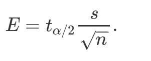

Capítulo 10 Cálculo de intervalos de confianza para la media de una población para muestras pequeñas o desviación típica desconocida
Cuando no conocemos la desviación típica de la población o la muestra es pequeña (n<30), no podemos estimar el error estándar con el desvío típico debido a que no se cumple el teorema central del límite. En estas ocasiones usaremos una nueva distribución de probabilidad llamada t de student. Algunas características de la distribución t de student son:
- Está centra en cero (al igual que Z).
- Es simétrica.
- Es menor en la media y mas alta en los extremos que una distribución normal. Tiene proporcionalmente mayor parte de su área en los extremos que la distribución normal. Existe una distribución t para cada tamaño de la muestra, por lo que “Existe una distribución para cada uno de los grados de libertad” Los grados de libertad se calculan con la siguiente fórmula: GL=n – 1
Al igual que para el resto de las distribuciones, podemos calcular la función densidad, acumulada y quantil de la distribución t de student a través de R con las siguientes fórmulas:
- dt(x, df) para la función densidad
- pt(q, df) para la función acumulada
- qt(p, df) para calcular los cuantiles
Cálculo del margen del error para para muestras pequeñas o desviación típica desconocida
Utilizamos la siguiente fórmula

t(alfa/2) lo calculamos con la función qt(probabilidad, grados de libertad)
Por ejemplo para un nivel de confianza de 0.9, alfa/2 va a ser 0.05 y una muestra de tamaño 10
## [1] -1.833113t(alfa/2)=1.833
Para armar el intervalo de confianza usamos la siguiente fórmula:

10.1 Ejercicio 3
Se ha obtenido una muestra de 15 vendedores de una Editorial para estimar el valor medio de las ventas por trabajador en la Empresa. La media y varianza de la muestra (en miles de euros) son 5 y 2, respectivamente. a. Determine el intervalo de confianza para la venta media por trabajador en la Editorial al 99 %.
10.1.1 En R
n <- 15 # El tamaño válido de la muestra
media <- 5 # la media
nivelconfianza = 0.99
desv <- sqrt(2) #En vez de _qnorm_ utilizo _qt_ en este caso de muestras pequeñas,
#estoy trabajando con la distribución t de student
qt(0.005,14) # 0.005 y 14 grados de libertaderror.est <- desv/sqrt(n) # Calculamos el error estándar
margen.error <- 2.97 * error.est # nivel de confianza de 99% Cálculo de límite inferior
Cálculo el límite superior
10.2 Ejercicio 4
Una muestra de 140 observaciones arrojó un promedio=30 y un desviación típica=6
- Hallar los límites de confianza del 95% para la media
- Considere que la muestra fue de 25 observaciones y hallar el intervalo de confianza para media con el 95%.
- ¿Qué diferencia encuentra entre ambos intervalos? Redacte su interpretación.